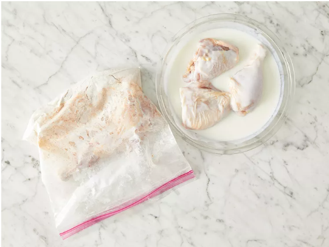

Crispy Fried Chicken
This is the only crispy fried chicken recipe you'll ever need. Why? It
combines all the tried-and-true tricks to ensure the juiciest, most
flavorful, crispiest chicken every time.

What Makes This Fried Chicken So Crispy?
There are a few reasons this crispy fried chicken works so well:
· Allowing the buttermilk-flour mixture to come to a paste-like
consistency is key
to a crispiness on the outside and juiciness on the inside.
· Most fried chicken is cooked at a high temperature throughout the frying
process.
This one, however, only starts at a very high heat — after browning, the
heat is
reduced for about 30 minutes. You'll turn up the temperature again at the
end, locking in that crispy texture.
· Paprika adds smoky flavor and has a low smoke point, which helps with
browning the chicken.

Ingredients
- 1 (4 pound) chicken, cut into pieces
- 1 cup buttermilk
- 2 cups all-purpose flour for coating
- 1 teaspoon paprika
- salt and pepper to taste
- 2 quarts vegetable oil for frying
Directions
- Step 1
- Take your cut up chicken pieces and skin them if you prefer.
- Step 2
-
Put the flour in a large plastic bag (let the amount of chicken you are
cooking dictate
the amount of flour you use). Season the flour with paprika, salt and
pepper to taste
(paprika helps to brown the chicken).
- Step 3
-
Dip chicken pieces in buttermilk then, a few at a time, put them in the
bag with the flour,
seal the bag and shake to coat well.

- Step 4
-
Place the coated chicken on a cookie sheet or tray, and cover with a
clean dish towel or waxed paper.
LET SIT UNTIL THE FLOUR IS OF A PASTE-LIKE CONSISTENCY. THIS IS
CRUCIAL!
seal the bag and shake to coat well.

- Step 5
-
Fill a large skillet (cast iron is best) about 1/3 to 1/2 full with
vegetable oil. Heat until VERY hot.
- Step 6
-
Put in as many chicken pieces as the skillet can hold. Brown the chicken
in HOT oil on both sides.

- Step 7
-
When browned, reduce heat and cover skillet; let cook for 30 minutes
(the chicken will be cooked through
but not crispy). Remove cover, raise heat again, and continue to fry
until crispy.
- Step 8
-
Drain the fried chicken on paper towels. Depending on how much chicken
you have, you may have to fry in a
few shifts. Keep the finished chicken in a slightly warm oven while
preparing the rest.